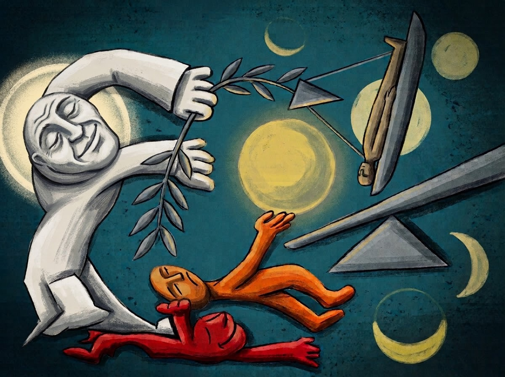

正面看舞台（觀眾視角）。人越往後越小；身體越矮代表 level 越低。頭上的標籤是表情：灰色＝正在動，黑色「定・」＝定像。

左邊的點線面圖譜加工成右邊的彩色圖譜；右圖的編號對應下面的說明。播放時，兩張圖上亮著的部分就是這一段用到的元素（序幕到分化還沒用到，所以全部亮著）。
概念來自《1984》：在老大哥的秩序裡，人們整齊劃一、麻木地生活。夢想出現後，有人追求、有人推開；最後夢想被老大哥消滅，故事停在追夢的人最痛苦的時候。
動畫是走位示意，動作細節以排練為準。拖曳時間軸可以跳到任一秒；點段落按鈕可以直接看該段。打開網頁時會自動載入預設配樂，按「▶ 播放」就會和動畫一起開始。也可以上傳別的音樂試聽：上傳的音樂只在你自己的瀏覽器裡播放，不會傳到網路上，重新整理頁面後會回到預設配樂。